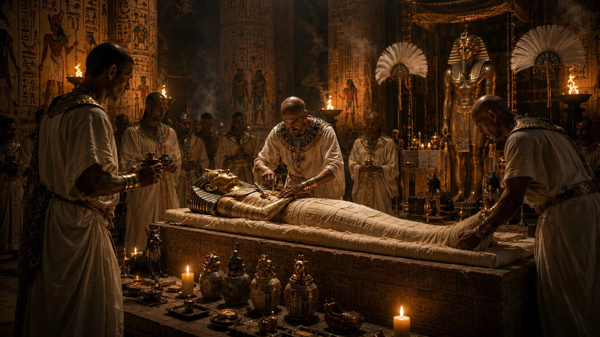
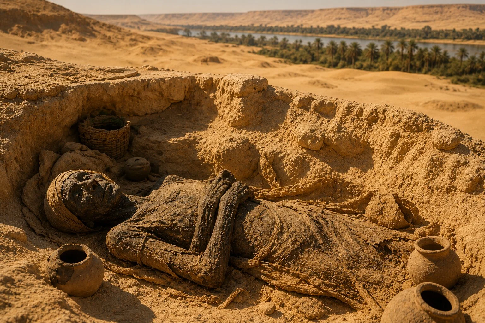
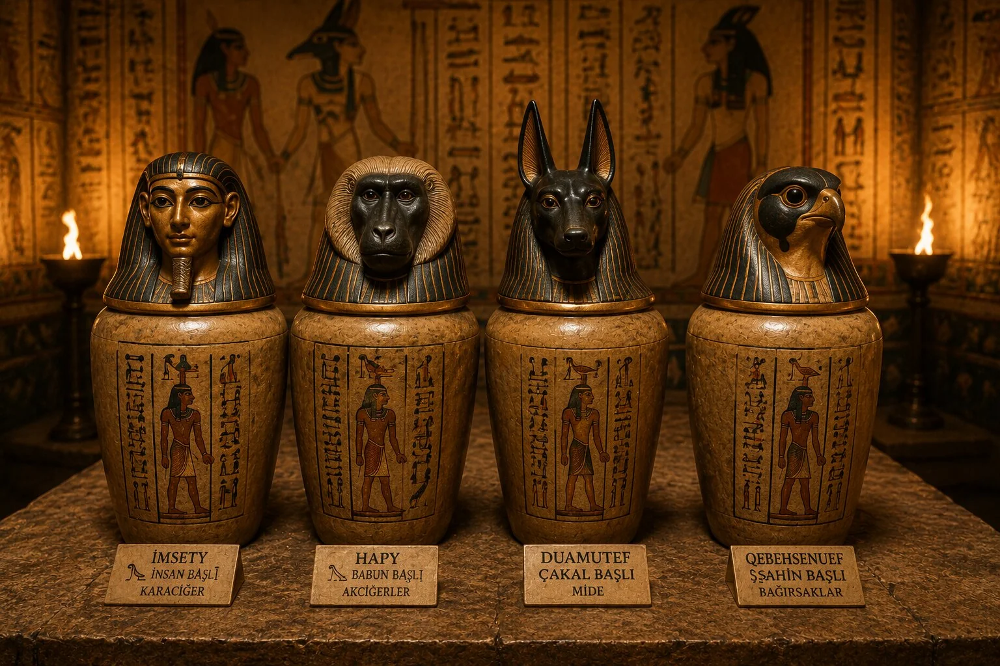
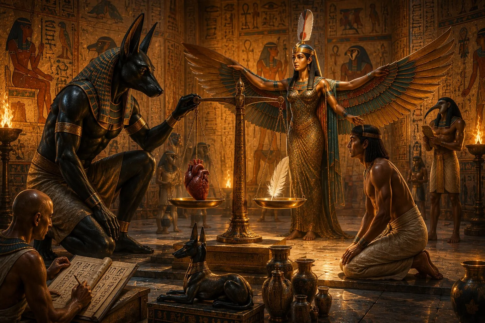
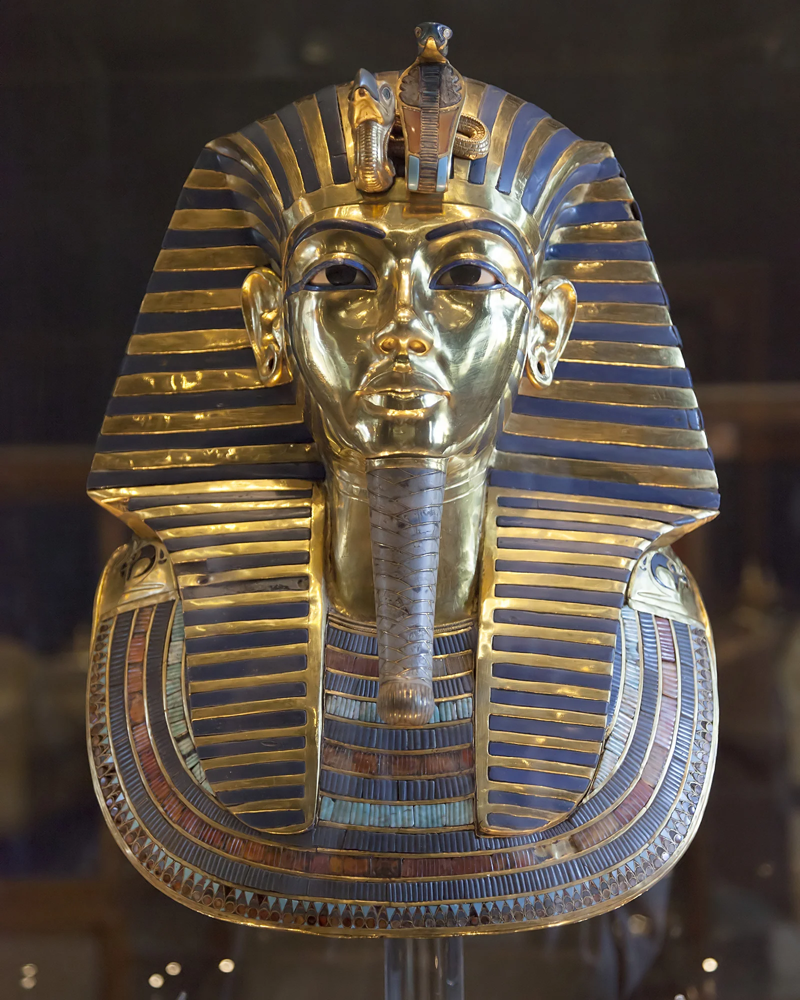
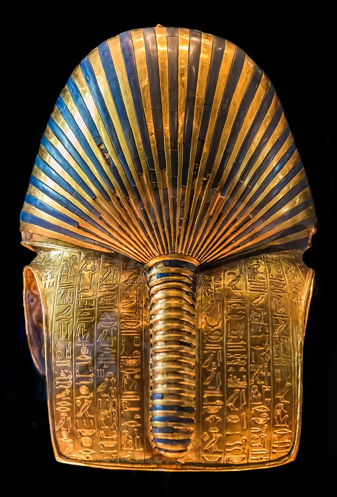

Bir insan öldüğünde geriye ne kalır?
Bugün bu soruya vereceğimiz cevap büyük ölçüde biyolojinin sınırları içindedir. Ölüm, yaşam fonksiyonlarının sona ermesi anlamına gelir ve beden zamanla doğaya karışır. Ancak Antik Mısırlılar aynı soruya çok farklı bir gözle bakıyordu. Onlar için ölüm, insanın hikâyesinin son sayfası değildi. Tam tersine, asıl yolculuk ölümden sonra başlıyordu ve bu yolculuğun başarıyla tamamlanabilmesi için yaşayanların yerine getirmesi gereken önemli sorumluluklar vardı.
İşte mumyalama geleneği bu düşüncenin ürünüdür.
Günümüzde mumyalar çoğu zaman gizemli mezarlar, lanet hikâyeleri ve sargılara sarılmış bedenlerle hatırlanır. Oysa Antik Mısır açısından bakıldığında mumyalama, korkutucu bir ölüm ritüelinden çok daha fazlasını ifade ediyordu. Bu uygulama, insanların ölümden sonra da varlıklarını sürdürebileceklerine dair güçlü bir inancın merkezinde yer alıyordu. Bir bedenin korunması yalnızca geçmişe duyulan saygıyla ilgili değildi; kişinin sonsuz yaşamdaki geleceğiyle doğrudan bağlantılı kabul ediliyordu.
Bu nedenle mumyalama, insanlık tarihinin en sıra dışı cenaze uygulamalarından biri hâline geldi. Binlerce yıl boyunca geliştirilen teknikler sayesinde bedenler yalnızca yıllarca değil, bazen binlerce yıl boyunca bozulmadan kalabildi. Bugün müzelerde gördüğümüz mumyalar, yalnızca arkeolojik buluntular değil; Antik Mısırlıların ölüm, ruh ve sonsuzluk hakkındaki düşüncelerinin günümüze ulaşan sessiz tanıklarıdır.
Ancak mumyalamayı gerçekten anlamak için önce şu soruya cevap vermek gerekir:
Mısırlılar neden ölülerini korumaya bu kadar önem veriyordu?
Ölüm Mısırlılar İçin Bir Son Değildi
Mumyalama geleneğinin temelinde, Antik Mısır'ın ölüm anlayışı bulunur. Çünkü bu uygulama yalnızca bedeni korumaya yönelik pratik bir yöntem değildi. Aslında çok daha büyük ve karmaşık bir inanç sisteminin parçasıydı. Mısırlılar insanın ölümle birlikte tamamen yok olduğuna inanmıyordu. Onlara göre insan, yalnızca görünen fiziksel bedenden oluşmuyordu ve ölümden sonra da varlığını sürdüren farklı ruhsal yönlere sahipti.
Bu düşünce sisteminde özellikle Ka ve Ba adı verilen kavramlar büyük önem taşıyordu. Ka, insanın yaşam gücü olarak kabul ediliyordu. Doğumla birlikte var olan bu yaşamsal öz, ölümden sonra da yaşamaya devam ediyordu. Ancak Ka'nın varlığını sürdürebilmesi için beslenmesi gerektiğine inanılıyordu. Bu nedenle mezarlara yiyecekler bırakılıyor, ölüler adına adaklar sunuluyor ve çeşitli ritüeller gerçekleştiriliyordu.
Ba ise kişinin bireyselliğini temsil ediyordu. Karakter, hafıza, alışkanlıklar ve kişiliğe ait özellikler Ba ile ilişkilendiriliyordu. Antik Mısır sanatında Ba'nın insan başlı bir kuş şeklinde tasvir edilmesi tesadüf değildir. Çünkü Ba'nın ölümden sonra mezardan ayrılabildiğine, ancak belirli zamanlarda yeniden bedenine dönmesi gerektiğine inanılıyordu.
İşte bu noktada bedenin korunması hayati bir önem kazanıyordu.
Eğer beden çürür, parçalanır ya da tanınmaz hâle gelirse Ka ve Ba'nın ihtiyaç duyduğu fiziksel bağ da ortadan kalkabilirdi. Mısırlılar için bu yalnızca biyolojik bir bozulma değildi. Aynı zamanda ölümden sonraki yaşamın tehlikeye girmesi anlamına geliyordu. Bu nedenle bedenin mümkün olduğunca uzun süre korunması gerekiyordu.
Ölümden sonraki yolculuğun nihai amacı ise Akh olarak bilinen kutsal dönüşüme ulaşmaktı. Akh, ölümden sonraki sınavları başarıyla geçmiş, ilahi dünyada varlığını sürdürebilen ruhu ifade ediyordu. Ancak bu dönüşüm kendiliğinden gerçekleşmiyordu. Doğru ritüellerin yapılması, bedenin korunması ve kişinin ölümden sonraki yargılamadan başarıyla geçmesi gerekiyordu.
Mumyalama işte tam bu noktada devreye giriyordu.
Çünkü Antik Mısırlılar için korunmuş bir beden, yalnızca geçmişte yaşamış bir insanın kalıntısı değil, ölümden sonraki yaşamın devamı için gerekli olan kutsal bir araçtı.
Mumyalama Fikri Nasıl Ortaya Çıktı?

İlginç olan şey, mumyalamanın başlangıçta planlanmış bir teknoloji olarak ortaya çıkmamış olmasıdır. Araştırmacıların büyük bölümü, bu fikrin doğrudan Mısır çölünün doğal koşullarından doğduğunu düşünmektedir.
Antik Mısır'ın erken dönemlerinde insanlar ölülerini çoğu zaman doğrudan çöl kumlarına gömüyordu. Çölün aşırı sıcak ve kuru yapısı, bedenlerdeki nemi hızla çekiyor ve doğal bir koruma sağlıyordu. Normal şartlarda çürümesi beklenen bazı bedenler, yıllar sonra bile şaşırtıcı derecede sağlam durumda bulunabiliyordu.
Bu gözlem muhtemelen Mısırlıların dikkatini çekti.
Doğa kendi kendine bedenleri koruyabiliyorsa, insanlar da bunu bilinçli şekilde yapabilirdi.
Zamanla mezarlar daha gelişmiş hâle geldi. Basit çukur mezarlar yerini taş yapılarla çevrili daha karmaşık mezarlara bıraktı. Ancak bu gelişme beklenmedik bir sorunu da beraberinde getirdi. Taş mezarlar, çöl kumunun doğal kurutucu etkisini ortadan kaldırıyordu. Daha korunaklı mezarlara gömülen bedenler artık eskisi kadar iyi korunmuyordu.
Bu durum Mısırlıları yeni çözümler aramaya yöneltti.
Böylece doğal korumayı taklit etmeye çalışan ilk bilinçli mumyalama yöntemleri ortaya çıktı. Başlangıçta oldukça basit olan bu uygulamalar, yüzyıllar boyunca geliştirilerek insanlık tarihinin en karmaşık cenaze teknolojilerinden birine dönüştü.
Mumyalama artık yalnızca doğanın yaptığı bir işlem değil, uzman rahipler ve mumyalayıcılar tarafından yürütülen ayrıntılı bir süreç hâline gelmişti.
Bir Mumya Nasıl Yapılıyordu?
Günümüzde mumyalama denildiğinde insanların aklına genellikle keten bezlere sarılmış bedenler gelir. Filmlerde ve belgesellerde de çoğu zaman sürecin bu yönü öne çıkarılır. Oysa sargılar, mumyalamanın yalnızca son aşamalarından biriydi. Bir bedenin ölümden sonraki yaşama hazırlanması haftalar süren karmaşık bir işlemler dizisini içeriyordu ve bu sürecin her adımı hem pratik hem de dini bir anlam taşıyordu.
Bir kişi öldüğünde ilk olarak beden özel bir alana götürülüyor ve temizleniyordu. Bu temizlik yalnızca hijyen amacı taşımıyordu. Mısırlılar için ölümden sonraki yaşama hazırlanan kişinin bedeni ritüel olarak da arındırılmalıydı. Ardından mumyalayıcılar bedenin korunmasını sağlayacak asıl işlemlere başlıyordu.
Mumyalamanın önündeki en büyük engel çürüme süreciydi. Bugün bunun nedenini bilimsel olarak açıklayabiliyoruz. İnsan bedenindeki nem ve organik dokular, ölümden sonra bakteriler için uygun bir ortam oluşturur ve çürüme hızla başlar. Antik Mısırlılar bakterileri bilmiyordu, ancak yüzyıllar boyunca edindikleri deneyimler onlara önemli bir gerçeği öğretmişti: Bir beden ne kadar kuru kalırsa, o kadar uzun süre korunabiliyordu.
Bu nedenle mumyalama sürecinin merkezinde bedenin kurutulması yer alıyordu.
Ancak kurutma işlemine geçmeden önce bedenin en hızlı bozulan bölümleriyle ilgilenmek gerekiyordu. Özellikle iç organlar, çürümenin ilk başladığı alanlardı. Bu yüzden mumyalayıcılar karın bölgesinde küçük bir kesik açıyor ve belirli organları dikkatlice çıkarıyordu. Karaciğer, mide, bağırsaklar ve akciğerler özel işlemlerden geçirilerek korunuyor, daha sonra mezara yerleştirilmek üzere hazırlanıyordu.
Bu noktada modern insanı şaşırtan önemli bir ayrıntı ortaya çıkar.
Bütün organlar çıkarılmıyordu.
Mısırlılar bir organı özellikle yerinde bırakıyordu: kalp.
Çünkü onların gözünde kalp yalnızca kan pompalayan bir organ değildi. Düşüncenin, hafızanın, karakterin ve kişinin gerçek benliğinin merkezi olarak görülüyordu. Bugün zihinsel faaliyetleri beyinle ilişkilendiriyoruz; ancak Antik Mısırlılar için insanın özü kalpte bulunuyordu. Ölümden sonraki yargılamada da kişinin yaşamı boyunca yaptığı her şeyin kalbinde kayıtlı olduğuna inanılıyordu. Bu yüzden kalbin korunması zorunluydu.
Beyin ise çok farklı değerlendiriliyordu. Mısırlılar ona modern dünyadaki kadar önemli bir işlev yüklemiyordu. Bu nedenle mumyalama sırasında genellikle çıkarılıyor ve korunmuyordu. Araştırmacılar beynin çoğu zaman burun yoluyla çıkarıldığını düşünmektedir. İnce aletler kullanılarak gerçekleştirilen bu işlem, dönemin şartları düşünüldüğünde son derece dikkat çekici bir teknik bilgi seviyesine işaret eder.
Ancak organların çıkarılması, sürecin yalnızca başlangıcıydı.
Asıl önemli aşama bundan sonra başlıyordu.
Bedenin çürümemesini sağlayan şey, Antik Mısır'ın en önemli doğal kaynaklarından biri olan natrondu. Natron; sodyum karbonat, sodyum bikarbonat ve çeşitli tuzlardan oluşan doğal bir mineral karışımıydı. Nil çevresindeki kurak bölgelerde bol miktarda bulunuyordu ve olağanüstü bir özelliğe sahipti: Nem çekiyordu.
Mumyalayıcılar bedeni natronla kaplıyor ve haftalar boyunca bekletiyordu. Bu süre boyunca bedenin içindeki suyun büyük bölümü çekiliyor, böylece çürümeyi sağlayan süreçler büyük ölçüde duruyordu. Bugün müzelerde gördüğümüz mumyaların binlerce yıl boyunca korunabilmesinin temel nedeni de budur.
Bu ayrıntı son derece önemlidir. Çünkü mumyalama çoğu zaman yalnızca dini bir uygulama gibi anlatılır. Oysa süreç incelendiğinde Antik Mısırlıların insan bedenini dikkatle gözlemlediği ve deneyim yoluyla son derece etkili koruma yöntemleri geliştirdiği görülür. Elbette onlar modern anatomi ya da mikrobiyoloji bilgisine sahip değildi. Ancak uzun gözlemler sonucunda nemin çürümeyle ilişkili olduğunu fark etmiş ve buna karşı etkili çözümler üretmişlerdi.
Kurutma işlemi tamamlandıktan sonra beden yeniden şekillendiriliyordu. Çünkü haftalar boyunca natron içinde kalan bir beden ciddi miktarda sıvı kaybediyordu. Mumyalayıcılar bazı bölgeleri keten, reçine veya çeşitli dolgu malzemeleriyle destekleyerek kişinin hayattaki görünümünü mümkün olduğunca korumaya çalışıyordu. Bu ayrıntı da mumyalamanın yalnızca bedeni saklama amacı taşımadığını gösterir. Amaç, ölümden sonraki yaşamda kişinin tanınabilir ve bütün hâlde varlığını sürdürebilmesiydi.
Son aşamada beden yüzlerce metreyi bulabilen keten bezlerle dikkatlice sarılıyordu. Ancak bu işlem de yalnızca fiziksel bir koruma yöntemi değildi. Katmanlar arasına çeşitli muskalar yerleştiriliyor, koruyucu dualar okunuyor ve ölünün öteki dünyadaki yolculuğunu güvence altına aldığı düşünülen kutsal semboller ekleniyordu. Böylece mumya, sıradan bir cesetten çok daha farklı bir şeye dönüşüyordu.
Artık o beden, ölümden sonraki yaşama hazırlanmış kutsal bir varlıktı.
Ancak çıkarılan organların kaderi de en az beden kadar önemliydi. Çünkü Antik Mısırlılar için insanın yalnızca dış görünüşünün değil, iç bütünlüğünün de korunması gerekiyordu. İşte bu düşünce, tarihin en ilginç cenaze uygulamalarından biri olan kanopik kavanozları ortaya çıkardı.
Kanopik Kavanozlar ve Organların Yolculuğu

Mumyalama sırasında çıkarılan organlar gelişigüzel bir şekilde ortadan kaldırılmıyordu. Antik Mısırlılar için insan bedeni, ölümle birlikte önemini kaybeden bir kabuktan ibaret değildi. Tam tersine, ölümden sonraki yaşamın devam edebilmesi için bedenin her parçasının belirli bir düzen içinde korunması gerekiyordu. Bu nedenle iç organlar da en az mumyanın kendisi kadar dikkatli biçimde muhafaza ediliyordu.
Bu amaçla kullanılan özel kaplara bugün kanopik kavanoz adı verilmektedir. Ancak bu kavanozlar yalnızca organ saklama kapları değildi. Mısırlılar için onlar, ölümden sonraki yaşamın devamlılığını sağlayan kutsal koruyucuların bir parçasıydı. Karaciğer, akciğerler, mide ve bağırsaklar ayrı ayrı korunuyor, özel işlemlerden geçiriliyor ve daha sonra mezara yerleştiriliyordu. Böylece bedenin yalnızca dış görünüşü değil, iç bütünlüğü de sembolik olarak muhafaza edilmiş oluyordu.
Zamanla bu kavanozlar Horus'un Dört Oğlu olarak bilinen koruyucu ilahi figürlerle ilişkilendirilmeye başladı. İnsan başlı İmsety karaciğeri, maymun başlı Hapy akciğerleri, çakal başlı Duamutef mideyi ve şahin başlı Qebehsenuef bağırsakları koruyordu. Bu figürlerin her biri ayrıca farklı tanrıçaların koruması altında kabul ediliyordu. Böylece organların korunması yalnızca fiziksel değil, aynı zamanda dini ve sembolik bir anlam kazanıyordu.
Bu ayrıntı ilk bakışta küçük görünebilir. Ancak aslında Antik Mısır'ın ölüm anlayışı hakkında çok şey anlatır. Çünkü Mısırlılar için ölümden sonraki yaşam yalnızca ruhun soyut bir şekilde varlığını sürdürmesi değildi. İnsanın bütünlüğünü koruyarak yeni bir varoluşa geçmesi gerekiyordu. Bu yüzden mezara bırakılan her eşya, her muska ve her organ belirli bir amaca hizmet ediyordu.
Bir firavunun mezarına baktığımızda karşılaştığımız zengin cenaze ekipmanlarının nedeni de budur. Altın maskeler, heykeller, günlük kullanım eşyaları, yiyecek sunuları ve kanopik kavanozlar aynı büyük planın parçalarıydı. Mısırlılar ölümden sonraki yaşamın rastlantılara bırakılamayacak kadar önemli olduğuna inanıyordu. Bu nedenle mezarlar yalnızca ölülerin konulduğu yerler değil, sonsuz yaşam için hazırlanmış ayrıntılı yapılar hâline gelmişti.
Kanopik kavanozlar da bu hazırlığın en dikkat çekici unsurlarından biriydi. Çünkü onlar, Mısırlıların insan bedenini ne kadar bütüncül gördüğünü ve ölümden sonraki yaşamı ne kadar ciddiye aldığını gösteren güçlü sembollerdi.
Ancak bedenin korunması ve organların muhafaza edilmesi tek başına yeterli değildi. Mısırlılara göre ölümden sonraki yaşamın başarıyla başlayabilmesi için ruhun da doğru şekilde yönlendirilmesi gerekiyordu. İşte bu noktada cenaze ritüellerinin en önemli figürlerinden biri olan Anubis devreye giriyordu.
Anubis'in Mumyalamadaki Rolü Neydi?
Bugün Antik Mısır denildiğinde akla gelen ilk figürlerden biri şüphesiz Anubis'tir. Siyah renkli çakal başıyla tasvir edilen bu tanrı, yüzyıllar boyunca ölüm ve cenaze ritüelleriyle ilişkilendirilmiştir. Ancak onu yalnızca "ölüm tanrısı" olarak tanımlamak, Mısır inanç sistemindeki gerçek rolünü anlamak için yeterli değildir.
Anubis'in görevi ölümü yönetmekten çok, ölümden sonraki geçişi güvenli hâle getirmekti. Antik Mısırlılar için ölüm korkulması gereken bir son değil, dikkatli hazırlanılması gereken bir yolculuktu. Bu yolculuğun başarılı olabilmesi için hem bedenin hem de ruhun korunması gerekiyordu. Anubis tam da bu nedenle cenaze ritüellerinin merkezinde yer alıyordu.
Mumyalama işlemlerini yöneten rahiplerin bazı törenlerde Anubis'i temsil eden maskeler taktığı bilinmektedir. Bu uygulama, gerçekleştirilen işlemin yalnızca teknik bir koruma süreci olarak görülmediğini gösterir. Mumyalayıcılar beden üzerinde çalışırken aynı zamanda kutsal bir görevi yerine getirdiklerine inanıyordu. Çünkü onların yaptığı iş, ölen kişinin sonsuz yaşama hazırlanmasına yardımcı olmaktı.
Anubis'in önemi yalnızca mumyalama sırasında ortaya çıkmaz. Ölümden sonraki yolculuk boyunca da ruhun koruyucularından biri olarak kabul edilirdi. Mezar metinlerinde ve cenaze tasvirlerinde sık sık ölüye rehberlik eden, onu tehlikelerden koruyan ve ilahi yargıya hazırlayan figür olarak karşımıza çıkar. Bu nedenle Anubis, Mısır ölüm anlayışının en önemli sembollerinden biri hâline gelmiştir.
Ancak cenaze ritüelleri yalnızca bedenin korunmasından ibaret değildi. Mısırlılar, ölen kişinin öteki dünyada yeniden nefes alabilmesi, konuşabilmesi ve yaşamını sürdürebilmesi için bazı kutsal törenlerin de gerçekleştirilmesi gerektiğine inanıyordu. Bu törenlerin en önemlisi ise Ağzın Açılması Ritüeli olarak bilinen uygulamaydı.
Ağzın Açılması Ritüeli Nedir?
Mumyalama sürecinin sonunda beden korunmuş, organlar muhafaza edilmiş ve cenaze hazırlıkları büyük ölçüde tamamlanmış oluyordu. Ancak Antik Mısırlılar için bütün bunlar ölümden sonraki yaşamın başlaması için tek başına yeterli değildi. Onlara göre ölen kişinin yeni dünyada varlığını sürdürebilmesi, yalnızca bedeninin korunmasına değil, aynı zamanda sembolik olarak yeniden "canlandırılmasına" da bağlıydı.
Bu düşünce, cenaze törenlerinin en önemli aşamalarından biri olan Ağzın Açılması Ritüeli'ni ortaya çıkardı.
Bu ritüelin temel amacı, ölen kişinin öteki dünyada yeniden nefes alabilmesini, konuşabilmesini, görebilmesini, duyabilmesini ve yemek yiyebilmesini sağlamaktı. Modern insan için bu durum sembolik bir uygulama gibi görünebilir. Ancak Antik Mısırlılar açısından son derece gerçek bir anlam taşıyordu. Çünkü ölümden sonraki yaşam, yalnızca ruhun varlığını sürdürdüğü soyut bir alan olarak düşünülmüyordu. Ölen kişinin başka bir dünyada yaşamına devam edeceğine inanılıyordu ve bunun için bazı temel yetilerin yeniden kazanılması gerekiyordu.
Tören sırasında rahipler özel kutsal aletler kullanıyor, çeşitli dualar okuyor ve mumyanın ya da mezar heykelinin ağız, göz ve kulak gibi bölümlerine sembolik dokunuşlar gerçekleştiriyordu. Bu uygulamanın amacı fiziksel bir değişiklik yaratmak değildi. Asıl amaç, kişinin ölümden sonraki yaşamda duyularını yeniden kullanabilir hâle gelmesini sağlamaktı.
Bu ritüel aynı zamanda Mısır ölüm anlayışının ne kadar ayrıntılı olduğunu da gösterir. Çünkü Mısırlılar için ölüm, bir insanın tamamen ortadan kaybolması anlamına gelmiyordu. Aksine, yaşamın farklı bir biçimde devam etmesi için gerekli hazırlıkların yapılması gerekiyordu. Bedenin korunması, organların muhafaza edilmesi, mezarın hazırlanması ve Ağzın Açılması Ritüeli gibi uygulamalar bu büyük sistemin birbirini tamamlayan parçalarıydı.
Bu nedenle bir mumyaya baktığımızda yalnızca dikkatli biçimde korunmuş bir beden görmeyiz. Aynı zamanda ölümden sonraki yaşam için hazırlanmış, kutsal ritüellerle desteklenmiş ve sonsuz yolculuğa uğurlanmış bir insanın izleriyle karşılaşırız.
Ancak bütün bu hazırlıkların nihai amacı yalnızca öteki dünyaya ulaşmak değildi. Mısırlılara göre ölümden sonra kişinin kaderini belirleyecek çok daha önemli bir aşama bulunuyordu. Çünkü her ruh, sonsuz yaşama kavuşmadan önce ilahi bir yargılamadan geçmek zorundaydı.
Kalbin Tartılması Töreni

Antik Mısır'ın ölüm anlayışını en iyi özetleyen sahnelerden biri, Ölüler Kitabı'nda ayrıntılı biçimde anlatılan Kalbin Tartılması Töreni'dir. Bugün Mısır sanatının en tanınan tasvirlerinden biri olan bu sahne, aslında mumyalamanın neden bu kadar önemli olduğunu da açıklar.
Mısırlılar ölümden sonra her insanın ilahi bir mahkemede yargılanacağına inanıyordu. Bu yargılama sırasında kişinin yaşamı boyunca yaptığı davranışlar değerlendiriliyor ve sonsuz yaşama layık olup olmadığına karar veriliyordu. Sürecin merkezinde ise kalp bulunuyordu.
Modern dünyada hafıza ve düşünceyi beyinle ilişkilendiriyoruz. Antik Mısırlılar ise insanın karakterinin, vicdanının ve yaşam boyunca yaptığı her şeyin kalpte saklandığına inanıyordu. Bu yüzden mumyalama sırasında kalbin korunması hayati önem taşıyordu. Eğer kişi ölümden sonraki yargılamaya kalbi olmadan çıkarsa, kim olduğunu kanıtlayamazdı.
Kalbin Tartılması sahnesinde Anubis, kişinin kalbini terazinin bir kefesine yerleştirir. Diğer kefede ise doğruluğu, adaleti ve evrensel düzeni temsil eden Ma'at'ın tüyü bulunur. Eğer kalp tüy kadar hafifse, kişinin yaşamını doğru ve adil bir şekilde sürdürdüğü kabul edilir. Böylece ruh sonsuz yaşama ulaşma hakkı kazanır.
Ancak kalp ağır gelirse durum değişir. Bu, kişinin yaşamı boyunca işlediği kötülüklerin ve düzensizliklerin kalbine yük olduğunu gösterir. Böyle bir durumda ruhun sonsuz yaşama ulaşamayacağına inanılıyordu. Kalbin kaderi, kişinin ölümden sonraki geleceğini belirleyen en önemli unsur hâline geliyordu.
Bu sahnede dikkat çeken bir başka figür de Thoth'tur. Yazının, bilgeliğin ve kayıtların tanrısı olan Thoth, yargılamanın sonucunu kaydeden ilahi tanık olarak görev yapar. Böylece karar yalnızca verilmekle kalmaz, aynı zamanda evrensel düzenin bir parçası olarak kayıt altına alınmış olur.
Yargılamanın sonunda başarılı olan ruh, Osiris'in huzuruna çıkmaya hak kazanır. Böylece ölümden sonraki yaşam yolculuğunun en önemli aşamalarından biri tamamlanmış olur.
Bu nedenle mumyalama yalnızca bedeni korumaya yönelik teknik bir işlem olarak görülemez. Mısırlılar için korunmuş beden, ölümden sonraki yaşamın kapısını açan ilk adımdı. Kalbin Tartılması ise bu yolculuğun kaderini belirleyen son büyük sınavdı.
Mumyalama sürecinin karmaşıklığı ve maliyeti düşünüldüğünde akla doğal olarak başka bir soru gelir. Bu kadar uzun ve zahmetli bir uygulama gerçekten herkes için mi gerçekleştiriliyordu, yoksa yalnızca belirli bir kesime mi özgüydü?
Herkes Mumyalanabiliyor Muydu?
Bugün müzelerde sergilenen altın maskelerle süslenmiş görkemli mumyaları gördüğümüzde, Antik Mısır'da yaşayan herkesin öldüğünde benzer işlemlerden geçtiğini düşünmek kolaydır. Ancak gerçekte durum oldukça farklıydı. Mumyalama, bütün toplum tarafından bilinen ve önem verilen bir uygulama olsa da herkes aynı seviyede cenaze hazırlığına sahip değildi.
Bunun en önemli nedeni maliyetti.
Tam kapsamlı bir mumyalama süreci haftalar süren çalışmalar gerektiriyordu. Uzman mumyalayıcılar, rahipler, keten kumaşlar, natron, reçineler, muskalar ve çeşitli cenaze ekipmanları ciddi bir ekonomik yük oluşturuyordu. Bu nedenle en ayrıntılı ve en kaliteli mumyalama işlemleri genellikle firavunlar, kraliyet ailesi üyeleri, yüksek devlet görevlileri ve zengin aileler için uygulanabiliyordu.
Ancak bu durum sıradan insanların ölümden sonraki yaşama inanmadığı anlamına gelmez. Tam tersine, ölümden sonraki yaşam düşüncesi Mısır toplumunun hemen her kesiminde yaygındı. Farklı olan şey inancın kendisi değil, bu inanca hazırlanmak için ayrılabilen kaynaklardı.
Arkeolojik buluntular, daha mütevazı cenaze uygulamalarının da yaygın olduğunu göstermektedir. Bazı insanlar daha basit yöntemlerle kurutuluyor, bazıları ise doğrudan çöl kumunun doğal koruyucu etkisinden yararlanılarak gömülüyordu. Kullanılan malzemeler, mezarın büyüklüğü ve cenaze törenlerinin kapsamı kişinin ekonomik durumuna göre değişebiliyordu.
Bu durum aslında Antik Mısır toplumunun sosyal yapısını da yansıtır. Yaşam sırasında olduğu gibi ölümden sonraki yaşama hazırlıkta da toplumsal farklılıklar görülüyordu. Ancak ister bir firavun ister sıradan bir çiftçi olsun, birçok Mısırlı aynı temel düşünceyi paylaşıyordu: Ölüm son değildi ve insanın öteki dünyaya hazırlanması gerekiyordu.
Bu nedenle mumyalama yalnızca seçkinlere özgü bir gelenek olarak görülmemelidir. Daha doğru ifade etmek gerekirse, mumyalamanın en gelişmiş biçimleri seçkinlere aitti; ancak ölümden sonraki yaşam inancı bütün toplumun ortak kültürel mirasının bir parçasıydı.
Mumyalar Hakkında En Yaygın Yanlış Bilgiler
Mumyalar, Antik Mısır'ın günümüze ulaşan en tanınmış miraslarından biridir. Ancak aynı zamanda hakkında en fazla yanlış bilgi bulunan konular arasında yer alır. Bunun en büyük nedenlerinden biri, insanların mumyaları çoğu zaman arkeolojik araştırmalardan çok filmler, romanlar ve popüler kültür aracılığıyla tanımış olmasıdır.
En yaygın yanlış inanışlardan biri, Antik Mısır'da yaşayan herkesin mumyalandığı düşüncesidir. Oysa daha önce de gördüğümüz gibi, gelişmiş mumyalama işlemleri oldukça maliyetliydi ve toplumun yalnızca belirli kesimleri bu hizmetlerden yararlanabiliyordu. Halkın büyük bölümü daha sade cenaze uygulamalarına sahipti.
Bir başka yaygın yanlış bilgi, Mısırlıların beyni tamamen önemsiz gördüğü yönündedir. Aslında mesele beyni değersiz bulmaları değil, insanın özünü farklı bir yerde aramalarıydı. Mısırlılar düşüncenin, hafızanın ve kişiliğin merkezi olarak kalbi kabul ediyordu. Bu nedenle kalbi korumaya büyük önem verirken beyni aynı şekilde değerlendirmiyorlardı. Bu yaklaşım günümüz bilimsel bilgileriyle uyuşmasa da kendi inanç sistemleri içinde son derece tutarlıydı.
Mumyalarla ilgili en ünlü efsanelerden biri de firavun lanetleridir. Özellikle 1922 yılında Tutankhamun'un mezarının keşfedilmesinden sonra bu tür hikâyeler dünya çapında büyük ilgi görmeye başladı. Kazıya katılan bazı kişilerin ilerleyen yıllarda hayatını kaybetmesi, gazetelerde gizemli başlıklarla yayımlandı ve "Firavunun Laneti" fikri popüler kültürün önemli parçalarından biri hâline geldi. Ancak tarihçiler ve bilim insanları bu ölümlerin büyük ölçüde doğal nedenlerle açıklanabileceğini belirtmektedir. Bugüne kadar gerçek bir lanetin varlığını kanıtlayan herhangi bir bilimsel bulgu elde edilememiştir.
Belki de en önemli yanlış anlamalardan biri, mumyalamanın ölüm korkusundan kaynaklandığı düşüncesidir. İlk bakışta bu mantıklı görünse de Antik Mısırlıların bakış açısı farklıydı. Onlar ölümü yenmeye çalışmıyordu. Ölümün kaçınılmaz olduğunu kabul ediyor, ancak ölümden sonraki yaşamın devam edeceğine inanıyordu. Mumyalama bu nedenle ölümden kaçma çabası değil, ölümden sonraki yaşamı mümkün kılma çabasıydı.
Bu ayrıntı oldukça önemlidir. Çünkü mumyaları gerçekten anlayabilmek için onları modern dünyanın korkuları ve beklentileriyle değil, Antik Mısır'ın inanç sistemi içinden değerlendirmek gerekir. Aksi hâlde karşımızda yalnızca keten bezlere sarılmış bedenler kalır. Oysa Mısırlılar için bu bedenler, sonsuz yaşama hazırlanmış insanların sessiz temsilcileriydi.
Tarihin En Ünlü Mumyaları


Bugün dünya üzerinde milyonlarca insan Tutankhamun adını biliyor. Bunun nedeni onun Antik Mısır'ın en büyük hükümdarı olması değildir. Aslında genç yaşta ölen bu firavun, siyasi başarıları açısından II. Ramses ya da III. Thutmose gibi büyük hükümdarların gerisinde kalır. Onu benzersiz yapan şey, mezarının büyük ölçüde bozulmadan günümüze ulaşmış olmasıdır.
1922 yılında İngiliz arkeolog Howard Carter tarafından keşfedilen mezar, arkeoloji tarihinin en önemli olaylarından biri olarak kabul edilir. Altın maskeler, mücevherler, savaş arabaları, heykeller ve yüzlerce cenaze eşyası yalnızca bir firavunun zenginliğini değil, Antik Mısır'ın ölümden sonraki yaşama verdiği önemi de gözler önüne sermiştir. Özellikle Tutankhamun'un altın cenaze maskesi, bugün Antik Mısır'ın en tanınan sembollerinden biri hâline gelmiştir.
Ancak Tutankhamun tek ünlü mumya değildir. II. Ramses de günümüze ulaşan en etkileyici mumyalardan biri olarak kabul edilir. Yaklaşık doksan yıl yaşadığı düşünülen bu hükümdar, Antik Mısır tarihinin en güçlü firavunları arasında yer alır. Modern araştırmalar sayesinde saç renginden diş yapısına, geçirdiği hastalıklardan yaşlılık dönemindeki sağlık sorunlarına kadar birçok ayrıntı hakkında bilgi edinilebilmiştir.
Son yıllarda gelişen teknolojiler, mumyaların yalnızca korunmuş bedenler olmadığını da göstermiştir. Bilgisayarlı tomografi, DNA analizleri ve üç boyutlu görüntüleme yöntemleri sayesinde araştırmacılar binlerce yıl önce yaşamış insanların sağlık durumlarını, beslenme alışkanlıklarını ve hatta bazı genetik özelliklerini inceleyebilmektedir. Bu nedenle bir mumya yalnızca geçmişten kalan bir kalıntı değil, aynı zamanda tarihçiler için son derece değerli bir bilgi arşividir.
Mısırlılar bedenlerini ölümden sonraki yaşam için korumaya çalışıyordu. Fakat bugün o bedenler, hiç beklemedikleri başka bir amaca da hizmet ediyor: Geçmişin insanlarını ve yaşamlarını anlamamıza yardımcı oluyorlar.
Sonuç: Ölüleri Korumaktan Çok Daha Fazlası
Mumyalama çoğu zaman teknik bir işlem olarak anlatılır. Organların çıkarılması, bedenin natronla kurutulması, keten bezlerle sarılması ve mezara yerleştirilmesi sürecin görünen kısmını oluşturur. Ancak Antik Mısır açısından bakıldığında bunların hiçbiri tek başına anlam taşımaz.
Mumyalama, ölümden sonraki yaşam inancının doğal bir sonucuydu. Mısırlılar için bedenin korunması yalnızca geçmişe ait bir hatırayı muhafaza etmek anlamına gelmiyordu. Korunmuş beden, Ka'nın ve Ba'nın varlığını sürdürebilmesi, ölümden sonraki yolculuğun tamamlanabilmesi ve kişinin sonsuz yaşama ulaşabilmesi için gerekli görülüyordu. Bu nedenle bir mumya, onların gözünde yalnızca ölü bir beden değil, gelecekteki yaşamına hazırlanmış bir insandı.
Belki de mumyalamayı bu kadar etkileyici kılan şey budur. Çünkü bu uygulama yalnızca teknik bilgi, dini ritüel veya cenaze geleneği değildir. Aynı zamanda insanlığın ölüm karşısında geliştirdiği en kapsamlı ve en dikkat çekici düşünce sistemlerinden biridir. Antik Mısırlılar ölümün kaçınılmaz olduğunu biliyordu. Ancak onların asıl ilgilendiği şey ölümün kendisi değil, ölümden sonra ne olacağıydı.
Bugün bir müzede sergilenen mumyanın yüzüne baktığımızda yalnızca binlerce yıl önce yaşamış bir insanı görmeyiz. Aynı zamanda geçmişteki insanların umutlarını, korkularını, inançlarını ve sonsuzluk arayışlarını da görürüz. Bu nedenle mumyalar, yalnızca Antik Mısır'ın değil, insanlık tarihinin en etkileyici miraslarından biri olmaya devam etmektedir.
Antik Mısır'ın ölüm inançlarını daha geniş bir perspektiften ele almak isteyenler için Antik Mısır tanrıları hakkındaki yazımızı da inceleyebilirsiniz.
Sık Sorulan Sorular
Antik Mısır'da mumyalama neden yapılıyordu?
Antik Mısırlılar ölümün bir son olmadığına inanıyordu. Ka ve Ba gibi ruhsal unsurların ölümden sonra da varlığını sürdürebilmesi için bedenin korunması gerektiği düşünülüyordu. Bu nedenle mumyalama, ölümden sonraki yaşama hazırlığın en önemli aşamalarından biri olarak kabul ediliyordu.
Mumyalama işlemi ne kadar sürüyordu?
Antik kaynaklar ve arkeolojik veriler, gelişmiş mumyalama sürecinin yaklaşık yetmiş gün sürdüğünü göstermektedir. Bu süre boyunca beden temizleniyor, kurutuluyor, çeşitli ritüeller gerçekleştiriliyor ve son olarak keten bezlerle sarılıyordu.
Mısırlılar neden kalbi bedende bırakıyordu?
Mısırlılar kalbi insanın hafızasının, karakterinin ve vicdanının merkezi olarak görüyordu. Ölümden sonraki yargılamada kişinin kalbinin Ma'at'ın tüyüyle tartıldığına inanıldığı için kalbin korunması büyük önem taşıyordu.
Beyin neden çıkarılıyordu?
Antik Mısır inancında beyin, günümüzde olduğu kadar önemli kabul edilmiyordu. Düşünce ve kişiliğin merkezi olarak kalp görüldüğünden, mumyalama sırasında beyin çoğu zaman çıkarılıyor ve korunmuyordu.
Natron nedir?
Natron, doğal olarak oluşan bir tuz karışımıdır. Nem çekme özelliği sayesinde mumyalama sürecinde bedenin kurutulmasında kullanılmıştır. Mumyaların binlerce yıl boyunca korunabilmesinin temel nedenlerinden biri natrondur.
Kanopik kavanozlar ne için kullanılıyordu?
Mumyalama sırasında çıkarılan karaciğer, akciğerler, mide ve bağırsaklar özel kaplarda korunuyordu. Kanopik kavanoz adı verilen bu kaplar, Horus'un Dört Oğlu ile ilişkilendiriliyor ve ölümden sonraki yaşamda beden bütünlüğünün korunmasına yardımcı olduklarına inanılıyordu.
Anubis'in mumyalamadaki görevi neydi?
Anubis, cenaze ritüelleri ve mumyalamayla ilişkilendirilen tanrıydı. Mısırlılar onun ölülerin ruhuna rehberlik ettiğine, bedenin korunmasını sağladığına ve ölümden sonraki yargılamaya hazırlık sürecinde önemli rol oynadığına inanıyordu.
Ağzın Açılması Ritüeli nedir?
Bu ritüel, ölen kişinin öteki dünyada yeniden nefes alabilmesini, konuşabilmesini, görebilmesini ve yaşamını sürdürebilmesini sağlamak amacıyla gerçekleştirilen kutsal bir cenaze töreniydi.
Herkes mumyalanabiliyor muydu?
Hayır. En gelişmiş mumyalama yöntemleri genellikle firavunlar, kraliyet ailesi üyeleri ve varlıklı kişiler için uygulanıyordu. Ancak ölümden sonraki yaşam inancı toplumun tüm kesimlerinde yaygındı ve daha sade cenaze uygulamaları da bulunuyordu.
Günümüze ulaşan en ünlü mumya hangisidir?
Tutankhamun, günümüzde en tanınan mumyalardan biridir. Bunun en önemli nedeni, mezarının 1922 yılında büyük ölçüde bozulmadan keşfedilmiş olmasıdır. Ayrıca II. Ramses gibi birçok önemli firavunun mumyası da günümüze ulaşmıştır.
Kaynakça
- Assmann, Jan. Death and Salvation in Ancient Egypt. Cornell University Press, 2005.
- Brier, Bob. Egyptian Mummies: Unraveling the Secrets of an Ancient Art. HarperCollins, 1994.
- David, Rosalie. Religion and Magic in Ancient Egypt. Penguin Books, 2002.
- Ikram, Salima. Death and Burial in Ancient Egypt. Longman, 2003.
- Ikram, Salima & Dodson, Aidan. The Mummy in Ancient Egypt: Equipping the Dead for Eternity. Thames & Hudson, 1998.
- Pinch, Geraldine. Egyptian Mythology: A Guide to the Gods, Goddesses, and Traditions of Ancient Egypt. Oxford University Press, 2004.
- Taylor, John H. Death and the Afterlife in Ancient Egypt. University of Chicago Press, 2001.
- Wilkinson, Richard H. The Complete Gods and Goddesses of Ancient Egypt. Thames & Hudson, 2003.
- The British Museum – Ancient Egyptian Funerary Collections.
- The Metropolitan Museum of Art – Egyptian Art Collection.
- University College London (UCL) – Digital Egypt for Universities.
- Griffith Institute, University of Oxford – Ancient Egyptian Text Archives.
- UCLA Encyclopedia of Egyptology.